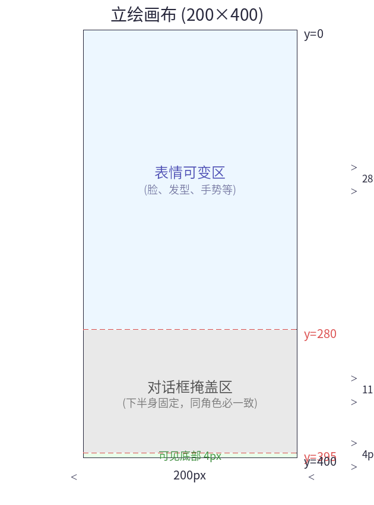
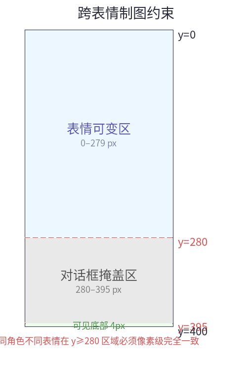
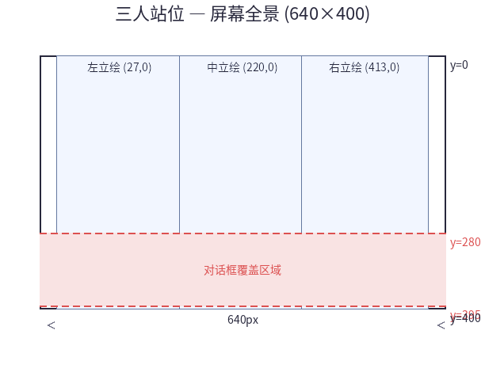

Sprites and Characters
Created: 2026-06-10
Last updated: 2026-07-27
This page describes the production guidelines for character-sprite and background assets.
1. Hard constraints
1.1 Transparent-color conventions
The PC-98 has no alpha channel. Sprite transparency is achieved via color-key transparency.
| Convention | Meaning |
|---|---|
| Transparent index | Palette index 15 (an engine convention — vram_blit_sprite skips this index) |
| Opaque indexes | Indexes 0–14, 15 actual colors in total |
| Asset format | RGBA PNG (transparent background); alpha<128 → index 15 |
White-background images are forbidden: if the character contains white (eye highlights, skin highlights), --sprite-key will misjudge it as transparent, leaving pixel holes in the character.
1.2 Sprite facing conventions
All sprite assets follow one uniform convention: right placement — the character stands on the right side of the screen, body facing left (toward the center). The engine implements left placement via horizontal mirroring:
| Placement | Horizontal mirror | Result |
|---|---|---|
| Right | Not needed | Original image; the character faces left (toward the center) |
| Center | Not needed | Original image; the character faces left |
| Left | Needed | Mirrored; the character faces right (toward the center, symmetric to the right side) |
Mirroring is controlled implicitly by the char position argument (left l mirrors horizontally automatically); assets are not drawn as separate left/right versions.
2. Sprite asset guidelines
2.1 Standard size
| Width×Height | Canvas | Meaning |
|---|---|---|
| 200×400 | 200×400 | Full-height sprite; bottom touches the screen bottom, top aligned to y=0 |
2.2 Asset requirements
- Format: RGBA PNG with an alpha transparency channel
- Canvas: position the character appropriately within the canvas — the canvas is the sprite's bounding box
- Transparent region: every pixel outside the character outline has alpha=0
- Index constraint: a sprite uses at most 15 colors (indexes 0–14); the 16th color (index 15) is transparent
- Drawing constraint: for sprites of the same character with different expressions, the region below the dialogue box [y=280, 400) must be pixel-identical

2.3 File naming conventions
| File | Meaning |
|---|---|
fei-normal.MAG | fei's default expression |
fei-happy.MAG | fei's happy expression |
fei-sad.MAG | fei's sad expression |
PNG source files share the MAG's base name with a different extension: fei-normal.png → fei-normal.MAG.
Expression names are recorded in the char_expressions.expr_name column; the engine does not parse expressions from file names — it indexes only via asset_map.id.
2.4 Cross-expression drawing constraints for the same character
The engine's "change the expression without redrawing the dialogue box" optimization relies on the following drawing rules:

| Region | Y range | Height | Requirement |
|---|---|---|---|
| Expression-variable region | 0–279 | 280 px | May differ per expression |
| Fixed region (hidden by the dialogue box) | 280–395 | 116 px | Pixel-identical |
| Fixed region (visible bottom) | 396–399 | 4 px | Pixel-identical |
| Fixed region total | 280–400 | 120 px | Must be identical for the same character |
Why? On an expression change the engine redraws only they<280region; the VRAM pixels aty>=280are left as-is. If the lower bodies of the same character's different expressions differ, you get the visual glitch of "a new face with the old body misaligned".
Drawing advice: crop the different expression versions from the same full-body base drawing, redrawing only the part with y<280.
2.5 Conversion command
python3 -m tools.naiz_conv.img2mag char_hime.png -o CHR_HIME.MAG --sprite --256- Detects the alpha channel automatically → transparent areas map to index 15
- No resize (keeps the original 200×400 size)
- Writes the
"sprt\x1a"user string
3. Background asset guidelines
3.1 Specifications
| Parameter | Value |
|---|---|
| Resolution | 640×400 |
| Colors | 256 colors (PEGC mode) |
| Format | MAG (MAKI02, screen_mode 0x80) |
| Input format | PNG or JPG (anything PIL supports) |
3.2 Palette protection
When a background MAG loads, the engine automatically skips these indexes:
| Index | Reserved color | Used for |
|---|---|---|
| 7 | #FFFFFF white | Dialogue text, dialogue-box borders, hints |
| 8 | #555555 gray | The Ctrl fast-forward hint |
The engine handles the protection automatically; creators need not worry. If the background needs an exact white/gray, just substitute index 6, 14, or similar.
3.3 Conversion command
python3 -m tools.naiz_conv.img2mag bg_photo.png -o BG001.MAG --dither --256
python3 -m tools.naiz_conv.img2mag bg_flat_colors.png -o BG002.MAG --256| Flag | Effect |
|---|---|
--dither | Floyd-Steinberg dithering (recommended for photos/gradients) |
| No flag | Direct quantization (recommended for pixel art/flat colors) |
3.4 Workflow
1. Draw a 640×400 background
2. Export the PNG → img2mag bg.png -o BG001.MAG --dither
3. BG001.MAG → IMAGE.DAT (packed by pack_images.py)
4. Engine loads → image_set_palette + vram_blit4. Placement layout
4.1 Placement mapping table
The l/c/r in the NB script's char() are mapped to pixel coordinates by the engine's pos_to_x():
| pos | Meaning | x coordinate |
|---|---|---|
l | Left | 27 |
c | Center | 220 |
r | Right | 413 |
The sprite's y is fixed at 0: top aligned with the screen top, the 400px bottom touching the screen bottom. The dialogue box [y=280,395] covers the sprite's bottom 116px.
Three-character layout (panorama):

4.2 Two-character layout
| Position | x at 200×400 |
|---|---|
| Left | 90 |
| Right | 350 |
4.3 Single-character layout
| Position | x at 200×400 |
|---|---|
| Center | 220 |
5. Sprite operations and rendering
5.1 Sprite operations
| Operation | Method | Dialogue-box impact |
|---|---|---|
| Show sprite (first time) | char(pos, expr, body){key} | None |
| Expression change | char(pos, expr, face){key} | Dialogue box not redrawn ✅ |
| Costume change / reposition | char(pos, expr, body){key} (when already shown) | Dialogue box redrawn automatically ✅ |
| Hide all | char(hideall) | Clears the sprites; the dialogue-box area reverts to plain background |
5.2 Rendering order
1. Background fullscreen → bg()
2. Character sprites → char()
3. Dialogue box → first dialogue command
4. Text → key(){}- Sprites sit below the dialogue box: the dialogue box is drawn after the second sprite pass, covering the part of a sprite that extends into the dialogue-box region.
- Text is always topmost: written over the dialogue box's base color.
- Semi-transparent dialogue box: the bottom of a sprite shows through faintly via the dot pattern — see cf03 Dialogue Box Style Scheme.
Note: all of the layers above write into the same graphics VRAM (the 256-color packed-pixel area formed by combining Graphics Plane A+B). The Text Plane is unused; text is drawn into the graphics VRAM as a bitmap. See fd01 §1.4 for details.
On an expression change (face type): only the y<280 region is redrawn and the dialogue box is untouched. This requires the same character's different expressions to be pixel-identical in the y≥280 region (see §2.4).
6. Palette management
Backgrounds and sprites share the same 256-color palette — the engine sets the whole-scene palette when loading the background, and sprite loading does not change the palette.
Workflow:
1. Make the background → img2mag bg.png -o BG001.MAG --dither
2. Set up the same palette in Aseprite/Krita
3. Export the character RGBA PNGs, named `角色-表情.png`
4. Register in ASSETS.DB:
asset_map — one entry per MAG file
characters — character definitions (charname → display name)
char_expressions — character → expression → asset_id mapping
5. pack_images.py packs it all (automatically verifying cross-expression y≥280 consistency)
6. IMAGE.DAT → engine rendering7. Relation to other documents
| Document | Content |
|---|---|
| fd01 Engine Fundamentals | Engine fundamentals (background/dialogue) |
| cf03 Dialogue Box Style Scheme | Dialogue-box preset styles |
| mc03 Layer Rendering and Costume-Change Mechanics | Render pipeline, sprite operations, costume-change mechanics |
| sc01 NB Scenario Overview | Basic commands such as bg/host/key/scene |